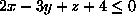
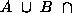
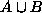
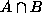

Copyright © 1994, 1996, 1999 Information
Geometers Ltd and The University of
Bath
The simplest sv_set_list is a single set so, if s is a set,
sv_set_list sl = sv_set_list(s);will create such a list (in fact, you can say
sv_set_list sl = s;as C++ recognizes that there is a unique constructor for the operation). If r is another set, then the statement
sl = merge(sl,r);will add it to the list. There are, of course, functions to extract the sets from a sv_set_list; see Page
sv_model m = sv_model(sl, b);Any parts of the shapes represented by the sv_sets in sl that lie outside the sv_box will be completely ignored by svLis. On the other hand, it doesn't matter if the sv_box fits rather loosely around the shapes, so it's usually not too hard to generate a suitable sv_box for a given sv_set_list.
Before going on to see how models work in detail, I need to indulge
in a short diversion through interval arithmetic, the way it is used for
boxes, and how primitives and boxes relate.
The principal use of intervals in svLis is to allow it to know the range of values that a function might take, given a range of inputs. For example, suppose we had the function f(x) = x2 - 2x and we knew that x lay somewhere in the interval [1,2], but we didn't know its exact value. What values might f take?
Well, if x is somewhere in [1,2], then 2x must be in [2,4]. Also x2 must be in [1,4]. We can therefore say that f([1,2]) = [1,4] - [2,4], which simplifies to f([1,2]) = [-3,2]. By doing such interval arithmetic, we can find the range of values a function might take if it were given a range of inputs.
SvLis includes an implementation of arithmetic on intervals. It is not
restricted to the simple arithmetic operators; for instance, you can take
the sine of an interval. If you want details, the simplest thing is to
look in the svLis interval header file, interval.h, or in the
User Manual on Page  .
.
Remember the sv_box
region of interest that I introduced in Chapter
1 to allow svLis to make a picture of a set inside the box? Boxes are
kept as three intervals: one each for
x, y and z.
Any operation that you can do on intervals, you can also do on boxes; the
operation just gets done on the three components.
SvLis also needs to know, for any primitive, where its surface is, so that pictures of it can be drawn and other results calculated. As we shall see below, in order to do this svLis must be able to tell what range of potential values a primitive may generate anywhere within a box. This range will be an interval. If the range interval is all negative, then the box is all in the solid region of the primitive; if it is all positive, then the box is in the air region of the primitive; if it contains zero then we may deduce that the primitive's surface passes through the box.
Suppose we have a box consisting of the x, y and z intervals ([0,1], [-1,1], [2,3]), and we have a half-plane (not normalized, to make the sums easier): . If we substitute the box intervals into the expression for the plane we get 2[0,1] - 3[-1,1] + [2,3] - 4. After performing the multiplication, addition and subtractions, we have the interval [3,12], on the range of the expression. Because this is all positive, we know that the box is entirely on the air side of the half-plane. If the y interval for the box were [-1,3] (making it bigger) then the resulting range interval would be [-3,12], and now the surface of the half-plane would pass through that bigger box.
SvLis can categorize any box against any primitive using this technique, and there is a function to do it:
sv_interval sv_primitive::range(sv_box b);
Given any primitive and any box, this function computes the range interval.
Hold on a moment. Maybe you spotted that the `deduction' we made above--that
an interval containing zero means that the primitive's surface passes through
the box--is not quite correct. In fact, a range containing zero only tells
svLis that the primitive's surface
might pass through the box. In
general, the range of potentials a primitive generates in a box by interval
arithmetic is conservative
which is to say that it is guaranteed to be the same size or larger
than the actual potential range in the box. This means that if the
range generated is all negative, svLis knows that the box must lie entirely
in the solid region of the primitive, and if it is positive svLis knows
that the box is entirely air with respect to that primitive. However, if
the range interval straddles zero, then svLis only knows that the box might
contain some of the surface of the primitive. Any function where an interval
variable occurs more than once will suffer this uncertainty. However, as
I shall show below, this uncertainty doesn't matter.
We can now say that, inside the box only, the set-theoretic expression is  solid. Now, anything intersected with solid is just itself, so the expression simplifies to .
The complete simplification rules for a set S and airs and solids are:
But the pruning process is much more powerful than that. It comes into its own when the model box is divided in two. This makes two adjacent models, but each is pruned to its own box, and is therefore much simpler than the original. The original is a parent model, and the two new ones are its children. The children can then be divided in turn. The whole process is repeated recursively to create a tree of boxes containing sets--a tree of models. The leaf boxes are models that contain sv_set_lists which are sufficiently simple that they are not worth dividing further.
What about the uncertainty when a primitive's potential range interval straddles zero, and thus indicates that the surface of the primitive might be in the box? The recursive divider overcomes this. Such primitives are left active in the boxes where they might have surface but, as those boxes are further divided, the intervals get tighter and tighter, and so the pruning process is able to remove them further down the model tree.
This model tree is the heart of svLis. It is what makes the modeller efficient, and what allows the component primitives that make up sets to be localized in space. As an example of all this, I will outline how the faceter that approximates the surface of a model with polygons for display (and other purposes) works.
sv_model::facet()takes an unfaceted model and calls the recursive division procedure:
sv_model::divide(void decision(...)).This procedure takes a pointer to another procedure--decision--as its argument. The decision procedure decides, for a model, if it is complicated enough to divide and, if it is, how to divide it. The decision procedure provided for the faceter in svLis is called facet_decision(...), but of course you can write your own.
Forget about lists of sets for a moment; suppose svLis starts faceting a model containing just one set. Initially, facet_decision(...) will get a model consisting of that set pruned to the initial model box. Suppose that set is made up of ten primitives. This is far too complicated to facet directly, so it needs to be divided. The decision procedure will therefore instruct the divider to cut the model in half in the longest model-box dimension. The halves will be pruned, and the divider called again recursively for the two halves. Eventually the pruning process will generate boxes with three or fewer primitives in. When this happens, the faceter treats such a box as follows:
The facet_decision(...) procedure also has to deal with sheets and wires, of course. The recursive division and pruning process manages them without having to treat them as special cases--in boxes where they generate zeros they exist (or might exist); in boxes where the interval of potential is all positive they are just air. Thus they can be completely accommodated by the clipping procedure, which just has to inspect the polygons which it is clipping to the box and to each other, and to do this clipping according to whether the polygons represent thin or solid primitives. A simple example division procedure is provided in source-code form with svLis in the file decision.c++. It is called dumb_decision(...) and, true to its name, it just divides boxes along their longest side until one of two user-supplied criteria is reached. The first defines the smallest box size beyond which division will not proceed; the second defines how simple the pruned contents of a box can be for it not to be divided further.
The procedure dumb_decision(...) is not really intended to
be used as it stands, but rather to be a template upon which you can base
your own decision procedures. Essentially what you do
is to decide what it is you're looking for in the model, then write a decision
procedure that--for any model--may say, ``Crikey! I can't hack this, it's
far too complicated; divide it further in direction x'' (or y
or z as appropriate). Alternatively, this decision procedure may
think to itself ``Aha!
this is what I'm after; I'll act on it, then
tell the divider this is a leaf''. Or, yet again, it may react ``Oh. Simple
model all right, but nothing interesting here. I'll forget this and tell
the divider this is a leaf.'' It's probably a good idea to have a fourth
alternative, too, which is ``Oops. This model's too complicated, but boy
is it small. Better forget it and say it's a leaf'' .
That stops the divider going on for ever in regions of irreducible complexity.
The whole idea is to write a decision procedure which is tailored to the
particular query that you want to ask of the resulting divided model.
.
That stops the divider going on for ever in regions of irreducible complexity.
The whole idea is to write a decision procedure which is tailored to the
particular query that you want to ask of the resulting divided model.
Finally, let's look at re-division. Suppose you have a complicated model and you've divided it. You then make a small change to one of the sets in the list of sets comprising the model. Usually, this will only affect the contents of the few leaf boxes in the divided model, and the rest of the division structure can be left alone.
SvLis has a redivide(...) function that takes a divided model,
a new list of sets for it, and a decision procedure as its argument. It
divides the model as before, but whenever it finds that it is generating
a box which is the same size and in the same place as a previous box, and
the contents of which are identical to those of the previous box, it will
not divide that box further. In this way the division process homes in
on just those parts of the model which have changed, leaving the rest unaltered.
This is obviously much more efficient than re-dividing the whole new model
from scratch.
It is sometimes the case that you can't write down a polynomial
(or any other closed form) for a shape that you want, but you could
write a procedure that, for any point in space, could say if that point
were inside, outside, or on the surface of the shape. As an example, suppose
you have a three-dimensional grid of data from a medical CT scan. You can
say, for any point (x, y, z), if the scan is dense
enough to correspond to bone, but you can't describe the shapes of the
bones algebraically.
SvLis has a simple mechanism for allowing you to use such a procedure
as a primitive (and hence, a data-set like a CT scan). The only requirements
are that you have to be able to say for a box whether it is in the solid
or air region of the primitive, or has some of its surface going through
it, and you have to be able to give similar answers for the x, y,
and z component primitives of the grad of your
primitive. You don't have to be able to provide second or higher derivatives
(unless your code needs them, of
course).
The box functions can be conservative, as are the interval-arithmetic methods svLis uses for its own primitives. The potential values that your primitive functions generate, and the direction of the grad vectors, need not be particularly precise away from the primitive's surface; as long as the potentials more-or-less increase in absolute value as you move away from the surface and never generate a value with the wrong sign, and as long as the normal vectors point roughly the right way and are correct at the surface (where they may be used for shading calculations), then everything should work.
Details of how to program your own primitives are given on Page  ,
and in the file u_prim.c++.
You can, of course, use svLis's facilities, as well as your own ingenuity,
to make a primitive. For example, you could (rather perversely, perhaps)
make a whole svLis model into a single primitive by employing the user
primitive functions.
,
and in the file u_prim.c++.
You can, of course, use svLis's facilities, as well as your own ingenuity,
to make a primitive. For example, you could (rather perversely, perhaps)
make a whole svLis model into a single primitive by employing the user
primitive functions.
Figure 22 shows a Venn diagram
similar to Figure 2; inside each of A
and B are negative potential values, outside each is positive. Suppose,
for any point, you were to take the maximum of the two potentials. This
would only be negative when both potentials were negative, which is to
say that it would only be negative in .
Suppose you were to take the minimum of the two potentials. This would
be negative when either of the primitives were negative, which is to say
that it would be negative anywhere in .
This means that the max
function works rather like intersection, and that the min
function works rather like union. Just as there are value
and range functions
to find the potential of a primitive at a point, and the range of potentials
in a box (Pages  and
and  ),
there are value and range functions that take sets as
arguments and use the min and max functions in the place
of union and intersection to generate potentials from sets, and also to
tell you the primitive or primitives that generate the final answer. This
is not necessarily the primitive closest to the point or box that you're
interested in, even if the primitive's distance functions are linear (imagine
a point diagonally away from a convex corner), but they do provide you
with much more information than the membership-test function, member.
),
there are value and range functions that take sets as
arguments and use the min and max functions in the place
of union and intersection to generate potentials from sets, and also to
tell you the primitive or primitives that generate the final answer. This
is not necessarily the primitive closest to the point or box that you're
interested in, even if the primitive's distance functions are linear (imagine
a point diagonally away from a convex corner), but they do provide you
with much more information than the membership-test function, member.
SvLis gives you a mechanism for attaching any information you like to any set (including a whole other model, if you want). Such information is called an attribute of the set. There is an sv_attribute class which implements this in the usual svLis way with hidden data, pointers, and reference counts. Attributes are stored in linked lists. Each attribute has an integer tag value which says what sort of attribute it is, a pointer to the next attribute in the linked list, and a pointer to a class called sv_user_attribute. As supplied, svLis has several types of tagged attribute in sv_user_attribute (see the files u_attrib.h and u_attrib.cxx): surface characteristics, text strings, points, intervals, and polygons. The mechanism by which all this is achieved is a void* pointer, which you can use for anything:
In this way, you can add your own attributes. Each type of attribute you add to sv_user_attribute must have a unique positive tag value (svLis reserves negative and zero tags for internal use). It is a good idea if your class provides its own tag, as in the example. All svLis classes do. Also, you must leave the colour and text attributes in there and unaltered (well, you can alter them if you like, but don't blame me if your models all come out puce and labelled in iambic pentameters). Note that you are responsible for memory allocation and de-allocation for things like my_class; svLis will only keep track of the pointers for you. There are functions in u_attrib.cxx that get called whenever the pointer to your class is copied or deleted to help you do this.sv_set s = my_set(); my_class* my_thing = new my_class(my_data); sv_attribute a = sv_attribute( my_thing->tag(), new sv_user_attribute((void*) my_thing) ); s = s.attribute(a);
The rules of attribute inheritance are simple. If a set has a list of attributes attached to it, that list is inherited by all the descendants of that set in the tree corresponding to the set-expression. That is to say that, if the set is , then A and B will have the same attribute list as the union, and so on down. This inheritance continues until another set is encountered with an attribute list. The second list is inherited by all the descendants of that set in the same way.
For the attribute functions and procedures, see Page  .
.